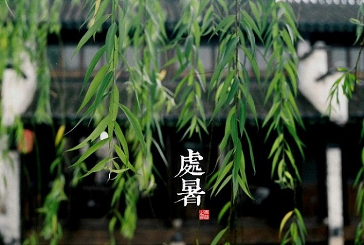

| 首页 学校概况 规章制度 德育网 教研网 名师风采 高考专栏 图书馆 校友会 河中论坛 查询系统 |
【家长学校1306期】我校组织学生“励志踏青”活动作者：教育处 点击数：878 更新时间：2013-4-15 2013年4月14日，教育处和高一年级组共同组织了高一年级及高二实验部学生“励志踏青”活动。 此次“励志踏青”活动，行程约30多公里，历时5个小时。同学们从大门口南行，左转至燕南大街直行经历历史文化街出南城门过子龙大桥，在南桥头右转进入汉河湿地公园景区，然后向西自由活动到神农庄园停车场集合，沿107国道北行至镇远路右转，到承德街左转北行，经环山西路返回学校。  同学们在此次活动中展现出学校和班级的良好精神风貌，队伍整齐，每个人脸上都洋溢青春的笑容，沿途和景区，随处都可以看到同学们捡拾垃圾的身影，互帮互助的身影。在景区，同学们尽情地拥抱大自然，呼吸着自由的空气，和好朋友合影留念，此次活动使同学们在徒步远行中砥砺了意志品质，于集体踏青是领略了湖光水色。 此次活动经教育处和高一年级组缜密筹划、精心组织，全体班主任和随队老师的通力配合，在校医院校车有力的后勤保障下，获得圆满成功！！ 上一篇：校园大扫除活动 下一篇：老红军来我校诉说革命历程 |


 [组图]我校被评为“石家庄市2010-2011年度文明单位” [组图]我校被评为“石家庄市2010-2011年度文明单位” [组图]我校被评为“石家庄市2010-2011年度文明单位” |
| Copyright © 2008-2016 http://www.***.com All Rights Roscrvcd 网站备案：冀ICP00000000号 |